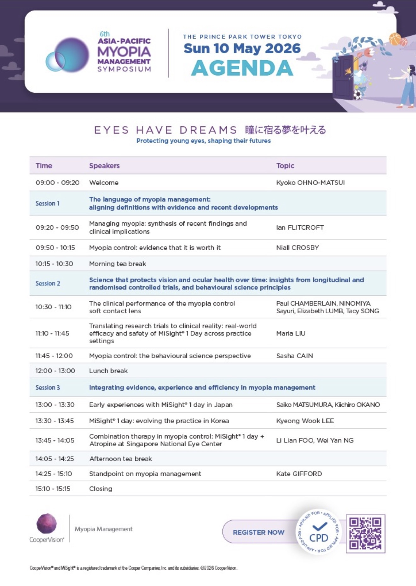
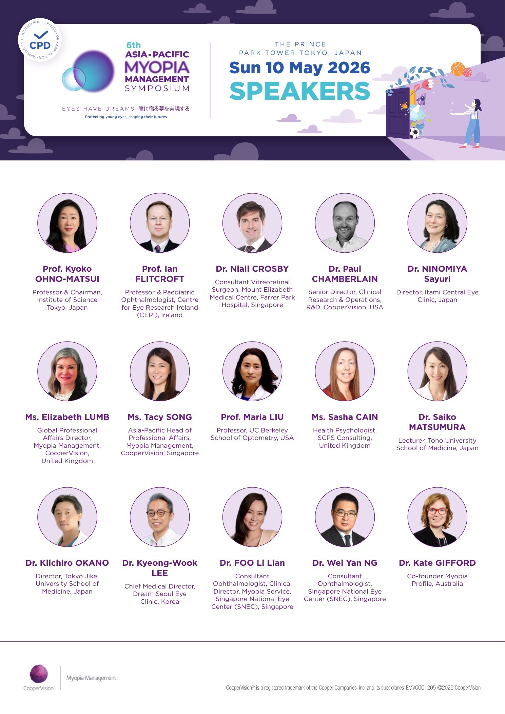

Program at a glance
以官方 Agenda 作為全站資訊架構。
探索 Asia-Pacific Myopia Management Symposium 2026 的官方議程、講者重點與近視管理最新洞察。

Official Agenda
Speakers3 Sessions · 10 Speaker Topics · Searchable Notes
以官方 Agenda 作為全站資訊架構。
從講者與 Topic 進入各段內容。
所有講者頁皆保留官方 Topic wording。
兒童近視管理已是長期眼健康照護的一部分，真正的挑戰不再只是選擇工具，而是如何依證據、風險、家庭行為與在地臨床條件，建立可持續的個別化管理策略。
建立近視管理的語言：從度數控制延伸到眼軸、病理風險與 lifelong eye care。
進入 Session 1以長期臨床研究、真實世界資料與行為科學，說明治療效果如何在日常照護中被實現。
進入 Session 2聚焦亞洲臨床導入、個別化治療、組合療法與實務效率。
進入 Session 3從短期度數控制，轉向長期病理風險管理。
配戴時間、家長理解與追蹤流程決定真實世界效果。
快速進展、高風險、成人進展與停止時機都需分層判斷。
可用於高風險或反應不足者，但不應機械式套用。
第二版新增講者視覺入口，適合從人物與 Topic 直接進入內容。
Managing myopia: synthesis of recent findings and clinical implications
Myopia management 不是單純 myopia control，而是從兒童到成人的 lifelong eye care。 臨床目標不只降低度數進展，也包含長期眼軸與病理風險管理。
閱讀整理 →Translating research trials to clinical reality: real-world efficacy and safety of MiSight® 1 Day across practice settings
RCT 是證據基礎，但真實世界病人比 RCT 更複雜。 實際臨床包含年齡更小或更大、高度近視、高散光、既往治療等族群。
閱讀整理 →Myopia control: the behavioural science perspective
近視管理是長期行為改變流程，而不是一次性處方。 有效治療未必會被採用；採用後也未必能長期維持。
閱讀整理 →MiSight® 1 day: evolving the practice in Korea
韓國 Dream Soul Eye Clinic 分享東亞兒童 MiSight 真實世界資料。 研究族群涵蓋 RCT 較少納入的高近視、高散光與較廣年齡範圍。
閱讀整理 →Combination therapy in myopia control: MiSight® 1 day + Atropine at Singapore National Eye Center
新加坡具高近視負擔與較完整公共衛生支持，因此較早系統性發展近視管理。 Combination therapy 主要用於高風險、快速進展或單一療法反應不足者。
閱讀整理 →Standpoint on myopia management
Childhood myopia management 已是 global standard of care。 現在問題不是「是否有效」，而是「如何為每位孩子做最適合的選擇」。
閱讀整理 →